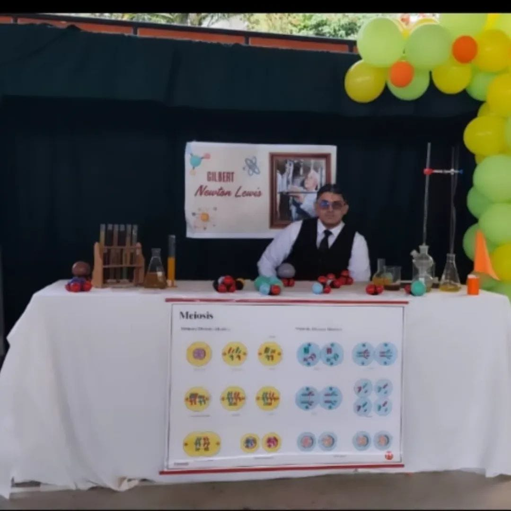

FERIA DE LA CIENCIA
Hoy nuestra comunidad educativa vivió una jornada extraordinaria, llena de conocimiento, creatividad y espíritu investigativo. A través de 26 stands, nuestros talentosos estudiantes nos invitaron a realizar un viaje en el tiempo para conocer a los científicos más influyentes de la historia. Cada uno de ellos representó con dedicación y entusiasmo a personajes que dejaron una huella imborrable en el desarrollo de la humanidad, compartiendo sus aportes, descubrimientos y el impacto de sus ideas en las distintas ramas del saber. La Feria de la Ciencia 2025 se convirtió en un espacio donde la curiosidad, la experimentación y el trabajo en equipo fueron los verdaderos protagonistas. Las exposiciones reflejaron el compromiso, la creatividad y el esfuerzo de nuestros jóvenes por comprender cómo la ciencia ha transformado el mundo y cómo continúa guiando el futuro de la sociedad.
16 de octubre de 2025